Compact BigGAN: Hierarchy, Projection and Captured Statistics
Abstract
A small class-conditional residual GAN fits 1000 balanced MNIST digits resized to 8x 8. Twelve Gaussian coordinates split into three chunks: one seeds a 4x 4 feature map and two join a shared class embedding to condition separate batch-normalization layers. A projection discriminator scores each image/class pair. Every /W kernel uses cached spectral normalization; G also receives a modified raw-kernel orthogonal penalty. Two Adam states perform 96 writes each across three fixed epochs. G's moving BN moments are captured in the same forward as its gradient, then committed after its Adam write. The complete native program preserves every original artifact, including rejection proposal audits, component derivatives and weak conditional samples. Separate inference and batch-statistics images explain the source's evaluation convention: its reported losses always consume batch-statistics fake images even when displayed images use saved BN.
Follow the three latent chunks and two conditional paths
The reference is [Brock, Donahue and Simonyan, Large Scale GAN Training for High Fidelity Natural Image Synthesis (2018/2019)](https://arxiv.org/abs/1809.11096). This repository retains a deliberately small 8x 8 teaching variant, not the paper's ImageNet architecture or benchmark. G has one residual nearest-up block, four feature channels and a shared raw class embedding. D has one residual down block and a spectral projection table. The same true digit label conditions real and generated rows during fitting. No auxiliary class head or requested-class accuracy metric is introduced.
#include <dm/dm.hpp>
int main() {
std::filesystem::create_directories("build");
dm::graphics::Diagram d(67, 1400);
dm::graphics::DiagramNodeStyle s;
s.width = 8.;
s.height = 4.;
s.font_size = 48;
d.node("z0", {-23, 0}, "Noise z0 (4)", s)
.node("z12", {-11, 11}, "Noise z1, z2 (4+4)", s)
.node("stem", {-11, 0}, "Spectral stem\n4x4x4 features", s)
.node("class", {1, 11}, "Requested class\nG: raw embedding\nD: spectral embedding", s)
.node("block", {1, 0}, "Conditional BN\nResidual up-block\nBN → pixel sigmoid", s)
.node("fake", {13, 0}, "Generated 8x8 pixels\nBatch or saved BN", s)
.node("real", {25, 11}, "Real 8x8 pixels", s)
.node("d", {25, 0}, "Residual D\nSource score\n+ class projection", s)
.node("bn", {1, -11}, "BN: 24 captures\nCommit after G Adam", s)
.node("sn", {-11, -11}, "G SN: 241 values\nD SN: 77 values\nAdvance own phase", s)
.edge("z0", "stem")
.edge("stem", "block")
.edge("z12", "block")
.edge("class", "block")
.edge("class", "d")
.edge("block", "fake")
.edge("fake", "d")
.edge("real", "d")
.edge("block", "bn")
.edge("sn", "stem")
.edge("sn", "d")
.text({1, -17}, "D SN → D write → G SN → fresh G write → commit SAME captured BN moments", 36)
.save_svg("build/big_gan_method.svg");
}
Check captured BN moments before any moving update
For two one-channel values(1,3), the batch mean is 2, population variance 1 and unbiased variance 2. Normalized values are ±1/sqrt(1+epsilon). Conditional affine scales(2,3) and shifts(-.5,.25) then act separately per row. The source uses population variance for normalization and source-rounded unbiased variance for moving state. With old mean 0/variance 1 and Float32-rounded retention.9, the next mean is about.200000048 and variance 1.100000024. Using population variance in the moving update would incorrectly keep variance 1.
capture_batch_norm returns normalized values and live moment captures without
writing existing statistics. batch_norm_moving_values computes detached candidates.
This split lets the fitting loop write G first and then commit the moments captured
before that write, without recomputing them at updated weights. The source divides
by sqrt(var+double(1e-5f)); a fused BN affine path has different Float32 rounding.
#include <dm/dm.hpp>
int main() {
namespace n = dm::nn;
auto t = n::DType::Float64;
n::ParameterStore stats(0, t);
auto x = n::tensor({1., 3.}, {2, 1}, t);
auto capture = n::capture_batch_norm(stats, "bn", x, true);
auto conditional =
capture.value * n::tensor({2., 3.}, {2, 1}, t) + n::tensor({-.5, .25}, {2, 1}, t);
auto next = n::batch_norm_moving_values(
stats.at("bn/moving_mean"),
stats.at("bn/moving_var"),
capture.mean,
capture.unbiased_variance);
if (capture.mean.at({0}) != 2 || capture.unbiased_variance.at({0}) != 2 ||
stats.at("bn/moving_mean").at({0}) != 0)
throw std::runtime_error("capture toy");
std::print(
"Captured mean={}, unbiased variance={}; candidate saved mean={}, variance={}. Existing "
"state stays0/1.\n",
capture.mean.at({0}),
capture.unbiased_variance.at({0}),
next.mean.at({0}),
next.variance.at({0}));
auto p = dm::graphics::RPlot::create();
p.y_limits(-3.5, 6.)
.lines({1., 2.}, capture.value.to_vector<double>(), "Unparameterized BN", {37, 99, 235}, 2.)
.points({1., 2.}, capture.value.to_vector<double>(), "", {37, 99, 235}, 4.)
.lines(
{1., 2.},
conditional.to_vector<double>(),
"Per-row conditional affine",
{220, 38, 38},
2.)
.points({1., 2.}, conditional.to_vector<double>(), "", {220, 38, 38}, 4.)
.x_label("Observation; batch values are1 and3")
.y_label("Normalized or conditionally affine value")
.title("Capture moments first; write moving state explicitly later")
.save_svg("build/big_gan_bn.svg");
}Captured mean=2, unbiased variance=2; candidate saved mean=0.20000004768371582, variance=1.100000023841858. Existing state stays0/1.
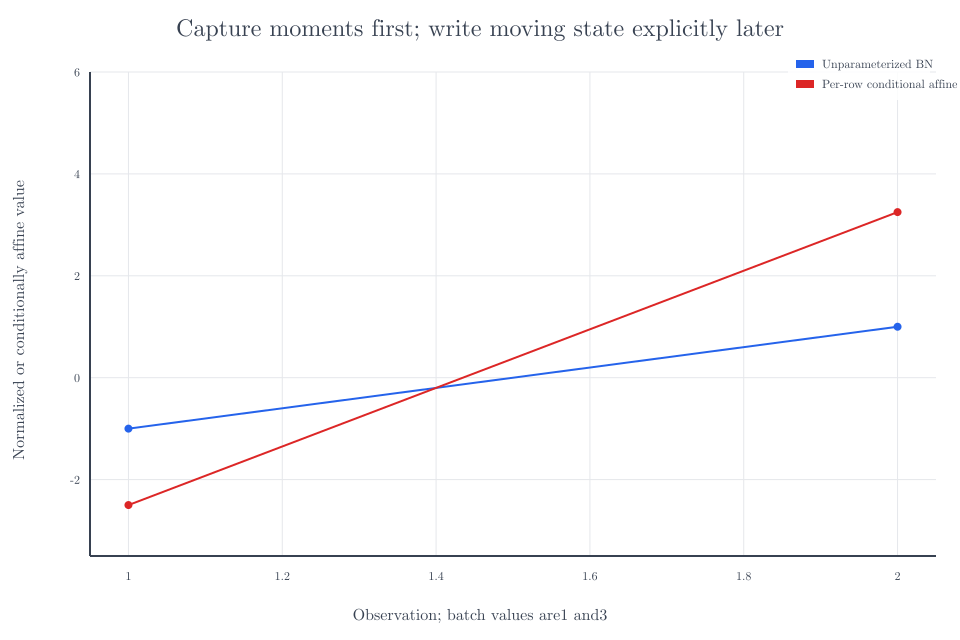
Check a class projection without changing the image features
A projection discriminator adds a class-feature inner product to a source score. For fixed features phi=(1,2,3,.5), source score.25 and two supplied effective class embeddings e 0=(1,0,0,0), e 1=(0,1,0,0), the projection terms are 1 and 2, so total scores are 1.25 and 2.25. Changing only the class leaves phi and the source term unchanged. These supplied features/embeddings isolate the algebra; they are separate from the learned checkpoint. The trained source uses ten requested classes and a spectrally normalized 10x 4 projection table.
#include <dm/dm.hpp>
int main() {
namespace n = dm::nn;
auto t = n::DType::Float64;
auto classes = n::tensor({0, 1}, {2}, n::DType::Int64),
onehot = n::cast(n::one_hot(classes, 2), t);
auto table = n::tensor({1., 0., 0., 0., 0., 1., 0., 0.}, {2, 4}, t),
features = n::tile(n::tensor({1., 2., 3., .5}, {1, 4}, t), {2, 1});
auto projection = n::sum(features * n::matmul(onehot, table), {1}, true),
source = n::full({2, 1}, .25, t), score = source + projection;
if (score.at({0, 0}) != 1.25 || score.at({1, 0}) != 2.25)
throw std::runtime_error("projection toy");
std::print(
"Fixed features/source; class0 score={}, class1 score={}.\n",
score.at({0, 0}),
score.at({1, 0}));
auto p = dm::graphics::RPlot::create();
p.y_limits(0., 4.)
.points({1., 2.}, source.to_vector<double>(), "Source term", {120, 120, 120}, 5.)
.points({1., 2.}, projection.to_vector<double>(), "Class projection", {37, 99, 235}, 5.)
.points({1., 2.}, score.to_vector<double>(), "Total raw score", {220, 38, 38}, 5.)
.x_label("Class condition: class0 at1; class1 at2")
.y_label("Raw score component")
.title("Class changes the projection term, without a class posterior")
.save_svg("build/big_gan_projection_toy.svg");
}Fixed features/source; class0 score=1.25, class1 score=2.25.
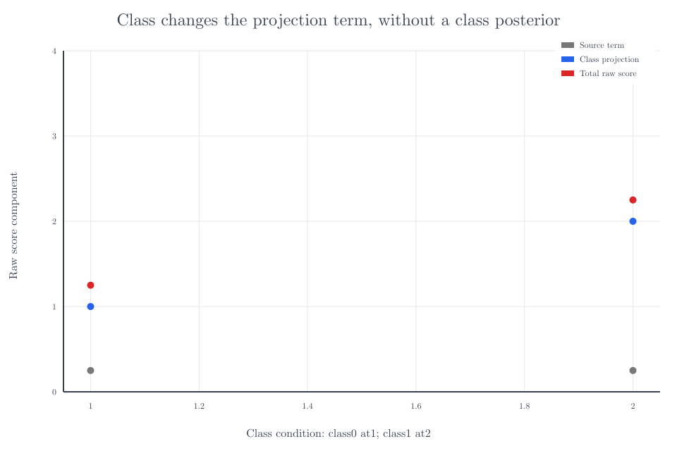
Check the modified orthogonal penalty on raw kernels
For a kernel M, the source adds lambda times the squared off-diagonal entries of MᵀM. It excludes the Gram diagonal and applies the penalty to raw /W kernels, not their spectrally normalized versions. A 2x 2 all-ones matrix with hand coefficient lambda=.5 has off-diagonal Gram entries 2, giving penalty 4 and weight derivatives 4. Other leaves contribute 0*sum(value), preserving defined zero partials. The raw G class embedding, conditional biases and output BN affine vectors receive no orthogonal force.
The curve instead uses the actual source coefficient double(.5e-4f) on two unit columns with correlation rho. Its penalty is 2*lambda*rho², displayed in units of 1e-4. This is a soft off-diagonal penalty, not a unit-norm constraint or a guarantee of orthogonality. The small generator's 4-to 64 stem is also overcomplete; no architectural or convergence claim follows from reducing this scalar.
#include <dm/dm.hpp>
int main() {
namespace n = dm::nn;
auto t = n::DType::Float64;
n::ParameterStore p(1, t);
p.get("toy/W", {2, 2}, n::init::ones());
p.get("bias", {2}, n::init::zeros());
auto penalty = n::models::ModifiedOrthogonalPenalty(p, .5);
auto gradient = n::grad(penalty, p.parameters());
if (penalty.item() != 4 || gradient[0].at({0, 0}) != 4 || n::sum(n::abs(gradient[1])).item() != 0)
throw std::runtime_error("orthogonal toy");
std::print(
"All-ones kernel, lambda=.5: penalty={}, each kernel partial4; bias partial0.\n",
penalty.item());
std::vector<double> rho, value;
for (int i = 0; i <= 20; ++i) {
double r = i / 20.;
p.set("toy/W", n::tensor({1., r, 0., std::sqrt(1 - r * r)}, {2, 2}, t));
rho.push_back(r);
value.push_back(1e4 * n::models::ModifiedOrthogonalPenalty(p).item());
}
auto plot = dm::graphics::RPlot::create();
plot.y_limits(0., 1.5)
.lines(rho, value, "Source coefficient", {37, 99, 235}, 2.)
.points(rho, value, "", {37, 99, 235}, 3.)
.x_label("Correlation between two supplied unit columns")
.y_label("Raw-kernel penalty, in units of1e-4")
.title("Only off-diagonal Gram entries are penalized")
.save_svg("build/big_gan_orthogonal.svg");
}All-ones kernel, lambda=.5: penalty=4, each kernel partial4; bias partial0.
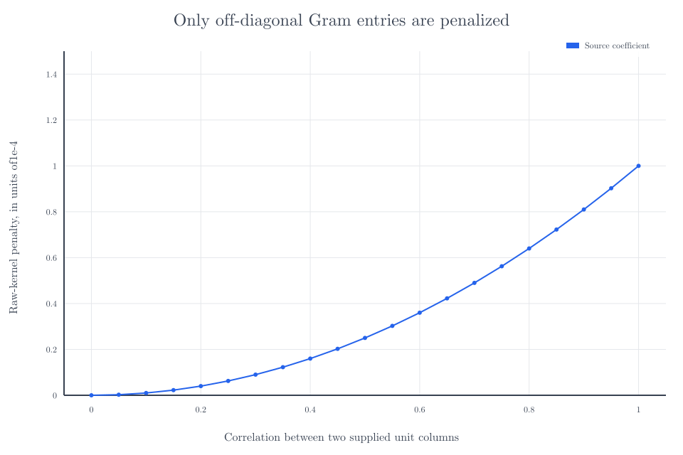
Reject Gaussian proposals rather than clipping coordinates
GaussianRejectionPrior uses a local MT19937 stream, midpoint uniforms and Box-Muller
cosine then cached sine. A Double candidate is accepted when abs(candidate)<=limit,
then rounded once to the requested dtype. Every tested candidate, including rejects
and final acceptance, remains in the Float64 audit. An unused trailing sine is not
appended. Positive infinity gives ordinary Gaussian draws. Finite thresholds change
the accepted stream; they do not clamp or rescale coordinates. A strict proposal budget
below 1000 times the requested coordinate count bounds this teaching sampler's work.
#include <dm/dm.hpp>
int main() {
auto prior = dm::nn::models::GaussianRejectionPrior(1, 12, 6907, .5);
auto candidates = prior.proposals.to_vector<double>();
std::vector<double> ax, ay, rx, ry;
auto count = std::min<std::size_t>(24, candidates.size());
double low = -.5, high = .5;
for (std::size_t i = 0; i < count; ++i) {
double v = candidates[i];
low = std::min(low, v);
high = std::max(high, v);
if (std::abs(v) <= .5) {
ax.push_back(i + 1);
ay.push_back(v);
} else {
rx.push_back(i + 1);
ry.push_back(v);
}
}
std::print(
"Twelve accepted coordinates consume{} proposals; first{} shown, with rejection before final "
"Float32 casting.\n",
candidates.size(),
count);
double span = high - low;
auto p = dm::graphics::RPlot::create();
p.y_limits(low - .1 * span, high + .5 * span)
.points(ax, ay, "Accepted Double candidate", {37, 99, 235}, 4.)
.points(rx, ry, "Rejected Double candidate", {220, 38, 38}, 4.)
.lines({1., double(count)}, {.5, .5}, "Absolute limit.5", {120, 120, 120}, 1.)
.lines({1., double(count)}, {-.5, -.5}, "", {120, 120, 120}, 1.)
.x_label("Tested proposal index; cosine then cached sine")
.y_label("Unclipped Gaussian proposal")
.title("Rejected values stay in the audit, not in the accepted bank")
.save_svg("build/big_gan_rejection.svg");
}Twelve accepted coordinates consume26 proposals; first24 shown, with rejection before final Float32 casting.
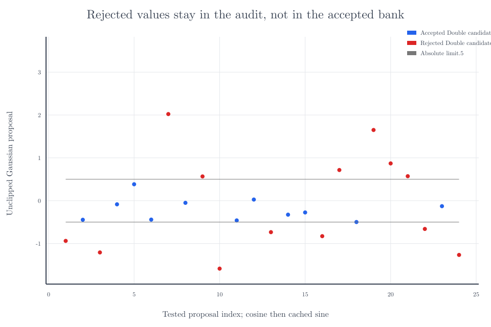
Native preparation and the resized digit pools
The program prepares mnist-assets, loads the checked saliency pools and resizes 28x 28
Float32 pixels to 8x 8 using half-pixel bilinear arithmetic in Double before a single
Float32 cast. Native resize reproduces all 89600 frozen resized pixels bit for bit.
Fitting/validation use disjoint original-training IDs; test IDs remain in the original
test range. Each class contributes 100 fitting and 20 validation/test rows. The preview
shows the first two fitting rows per class, without sample or model selection.
#include <dm/dm.hpp>
int main() {
namespace n = dm::nn;
auto home = std::filesystem::path(dm::datasets::data_home());
dm::datasets::prepare_example_data("mnist-assets", home);
auto pools = n::models::LoadSaliency(home / "saliency");
auto small = n::models::BigGanResize8(pools[0].images);
auto labels = pools[0].labels.to_vector<std::int32_t>();
std::vector<std::int64_t> rows;
for (int c = 0; c < 10; ++c) {
int seen = 0;
for (std::int64_t i = 0; i < 1000 && seen < 2; ++i)
if (labels[i] == c) {
rows.push_back(i);
++seen;
}
}
n::save_image_grid(
n::take_rows(small, rows), "build/big_gan_pools.png", 2, 0, 1, 4, 220 / 255., 8);
std::print(
"| pool | rows | per class | role |\n|---|---:|---:|---|\n| fitting |1000|100| updates |\n| "
"validation |200|20| log only |\n| test |200|20| fixed final diagnostics |\n");
}| pool | rows | per class | role |
|---|---|---|---|
| fitting | 1000 | 100 | updates |
| validation | 200 | 20 | log only |
| test | 200 | 20 | fixed final diagnostics |
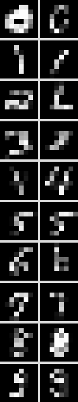
Complete experiment: advance, select gradients, write, then commit captures
G has 789 values in 17 leaves; D 241 in 9. G spectral vectors hold 241 values/18 tensors, D spectral vectors 77/10, and moving BN statistics 24/6. The complete checkpoint has 1372 values in 60 tensors, with 1030 values optimized. Every /W kernel starts normal(.02). G's shared class embedding starts normal(.1) and is neither spectral-normalized nor orthogonally penalized. Cached columns start 1.f/sqrt(float(length)); all three BN saved means start 0 and variances 1. Source epsilon/floor constants preserve Float32 rounding.
G/D seeds 6803/6823 and sixteen warm-up iterations per spectral store precede the initial snapshot. BatchOrder 6863 visits all 1000 fitting rows once per epoch in batches up to 32. Epoch prior seeds 6872/6873/6874, validation 6841, test 6857 and truncation 6907 preserve the source streams. Adam uses.0002, beta 1=0, beta 2=.999, epsilon 1e-8, independently for G and D. Each batch advances D's spectral cache, writes D, advances G's spectral cache, recomputes a fresh forward through updated D, captures its G moments, writes G, then commits those same captures with Float32-rounded.9 retention. It does not recompute moments at updated G weights. Ownership checks run after every phase, including BN.
Both inference and batch-statistics G paths are explicit. fake and fake_score select
only display endpoints: both losses ALWAYS use batch-statistics fake pixels. Validation
logs the four source objectives without selecting weights. Epoch 3 is fixed before fitting;
initial/final test outputs are diagnostic controls, with no test result selecting epochs,
weights, seeds or settings. The program retains all original data, proposal, gradient,
checkpoint and control archives. It additionally saves the first full captured G gradient
for the component check later. Every fitting statement remains editable below.
#include <dm/dm.hpp>
namespace nn = dm::nn;
namespace m = nn::models;
using Arrays = std::map<std::string, nn::Tensor>;
using nn::Tensor;
namespace {
void Require(bool condition, const std::string& message) {
if (!condition)
throw std::runtime_error(message);
}
void Near(double actual, double expected, double tolerance, const std::string& message) {
Require(std::abs(actual - expected) <= tolerance, message);
}
void SaveArrays(const std::string& path, const Arrays& a) {
nn::save_npz(path, nn::NamedTensors(a.begin(), a.end()));
}
bool Equal(const Tensor& a, const Tensor& b) {
return nn::equal_bits(a, b);
}
bool Equal(const Arrays& a, const Arrays& b) {
if (a.size() != b.size())
return false;
for (const auto& [key, value] : a)
if (!b.count(key) || !Equal(value, b.at(key)))
return false;
return true;
}
Tensor Gaussian(std::int64_t rows, std::int64_t width, std::uint64_t seed) {
return nn::cast(
m::GaussianNoise({rows, width}, 1, seed).reshape({rows, width}), nn::DType::Float32);
}
double MaxAbsDiff(const Tensor& a, const Tensor& b) {
return nn::max(nn::abs(nn::cast(a, nn::DType::Float64) - nn::cast(b, nn::DType::Float64))).item();
}
void Owners(const Arrays& before, const Arrays& after, const std::vector<std::string>& owners) {
for (const auto& [key, value] : before) {
bool selected = false;
for (const auto& prefix : owners)
selected |= key.rfind(prefix, 0) == 0;
if (!selected)
Require(Equal(value, after.at(key)), "unselected owner unchanged");
}
}
void AppendMoments(Arrays& a, const m::BigGanMoments& c) {
for (auto& [key, value] : Arrays{
{"moment/bn1/mean", c.bn1_mean},
{"moment/bn1/unbiased_var", c.bn1_unbiased_variance},
{"moment/bn2/mean", c.bn2_mean},
{"moment/bn2/unbiased_var", c.bn2_unbiased_variance},
{"moment/output_bn/mean", c.output_mean},
{"moment/output_bn/unbiased_var", c.output_unbiased_variance}})
a.emplace(key, value.detach());
}
Arrays Fields(const m::BigGanOutput& o, bool moments) {
Arrays a{
{"fake", o.fake},
{"fake_training", o.fake_training},
{"fake_inference", o.fake_inference},
{"fake_score_training", o.fake_score_training},
{"fake_score_inference", o.fake_score_inference},
{"real_score", o.real_score},
{"fake_score", o.fake_score},
{"d_loss", o.d_loss},
{"g_source", o.g_source},
{"g_orthogonal", o.g_orthogonal},
{"g_loss", o.g_loss}};
if (moments)
AppendMoments(a, o.moments);
return a;
}
double Value(const Arrays& a, const std::string& key) {
return a.at(key).item();
}
/// 8x8 digits at 8x with 4-pixel gray-220 gaps.
void Mosaic(const std::filesystem::path& path, const Tensor& images, std::int64_t columns) {
nn::save_image_grid(
nn::reshape(images, {-1, 8, 8, 1}), path.string(), columns, 0, 1, 4, 220 / 255., 8);
}
} // namespace
int main() {
const std::filesystem::path root = "build/big_gan";
const int epochs = 3;
const auto data = std::filesystem::path(dm::datasets::data_home()) / "saliency";
dm::datasets::prepare_example_data("mnist-assets", data.parent_path());
const auto pools = m::LoadSaliency(data);
std::filesystem::create_directories(root);
std::vector<Tensor> resized;
Arrays records;
for (int k = 0; k < 3; ++k) {
resized.push_back(m::BigGanResize8(pools[k].images));
records.emplace(
std::string(
k == 0 ? "fit"
: k == 1 ? "validation"
: "test") +
"_images",
resized.back());
}
SaveArrays((root / "data.npz").string(), records);
const auto validation = m::GaussianRejectionPrior(200, 12, 6841),
test = m::GaussianRejectionPrior(200, 12, 6857);
SaveArrays(
(root / "validation_prior.npz").string(),
{{"z", validation.z}, {"proposals", validation.proposals}});
SaveArrays((root / "test_prior.npz").string(), {{"z", test.z}, {"proposals", test.proposals}});
nn::ParameterStore g(6803), d(6823), gs(0), ds(0), moving(0);
std::vector<nn::ParameterStore*> stores{&g, &d, &gs, &ds, &moving};
{
nn::NoGradGuard guard;
m::BigGan(
g,
d,
gs,
ds,
moving,
nn::zeros({2, 8, 8, 1}),
nn::zeros({2, 12}),
nn::zeros({2}, nn::DType::Int32));
}
nn::advance_cached_spectral_state(g, gs, 16);
nn::advance_cached_spectral_state(d, ds, 16);
auto snapshot = [&]() {
Arrays a;
for (int k = 0; k < 5; ++k)
for (const auto& name : stores[k]->names())
a.emplace(std::to_string(k) + "/" + name, stores[k]->at(name).detach().clone());
return a;
};
auto forward = [&](const Tensor& x, const Tensor& z, const Tensor& labels, bool batch) {
return m::BigGan(g, d, gs, ds, moving, x, z, labels, batch);
};
auto evaluate = [&](const Tensor& x, const Tensor& z, const Tensor& labels, bool batch = false) {
nn::NoGradGuard guard;
return Fields(forward(x, z, labels, batch), batch);
};
auto capture = [&](int group, const Tensor& x, const Tensor& z, const Tensor& labels) {
auto out = forward(x, z, labels, true);
auto values = nn::grad(group ? out.d_loss : out.g_loss, stores[group]->parameters());
Arrays a;
const auto names = stores[group]->names();
for (std::size_t k = 0; k < names.size(); ++k)
a.emplace(std::to_string(group) + "/" + names[k], values[k]);
if (group == 0)
AppendMoments(a, out.moments);
return a;
};
auto component = [&](bool orthogonal, const Tensor& x, const Tensor& z, const Tensor& labels) {
auto out = forward(x, z, labels, true);
auto values = nn::grad(orthogonal ? out.g_orthogonal : out.g_source, g.parameters());
Arrays a;
const auto names = g.names();
for (std::size_t k = 0; k < names.size(); ++k)
a.emplace("0/" + names[k], values[k]);
return a;
};
nn::OptimizerConfig config;
config.kind = nn::OptimizerKind::Adam;
config.beta1 = 0;
config.beta2 = .999;
config.epsilon = 1e-8;
nn::Optimizer go(g, .0002, config), disc(d, .0002, config);
std::vector<nn::Optimizer*> optimizers{&go, &disc};
std::size_t tensors = 0;
for (int k = 0; k < 5; ++k)
tensors += stores[k]->size();
Require(
g.count() == 789 && d.count() == 241 && gs.count() == 241 && ds.count() == 77 &&
moving.count() == 24 && tensors == 60,
"1030 trainable + 342 state values, 60 tensors");
SaveArrays((root / "initial_arrays.npz").string(), snapshot());
SaveArrays(
(root / "initial_outputs.npz").string(), evaluate(resized[2], test.z, pools[2].labels));
nn::BatchOrder order(1000, 32, 6863);
int steps = 0;
Tensor first_x, first_z, first_labels;
std::ofstream history(root / "history.tsv"), batches(root / "batches.tsv");
history.precision(17);
history << "epoch\td_loss\tg_source\tg_orthogonal\tg_loss\n";
batches << "epoch\tstep\trow\tsource_id\n";
const auto source = nn::cast(pools[0].source, nn::DType::Int64).to_vector<std::int64_t>();
const auto started = std::chrono::steady_clock::now();
for (int epoch = 1; epoch <= epochs; ++epoch) {
const auto noise = m::GaussianRejectionPrior(1000, 12, 6871 + epoch);
order.begin_epoch();
for (;;) {
const auto rows = order.next();
if (rows.empty())
break;
const Tensor x = nn::take_rows(resized[0], rows), z = nn::take_rows(noise.z, rows),
condition = nn::take_rows(pools[0].labels, rows);
if (!steps) {
first_x = x, first_z = z, first_labels = condition;
SaveArrays((root / "first_forward.npz").string(), evaluate(x, z, condition, true));
const auto adv = component(false, x, z, condition),
ortho = component(true, x, z, condition);
const auto full = capture(0, x, z, condition);
for (const auto& [key, value] : adv) {
const auto a = value.to_vector<float>(), o = ortho.at(key).to_vector<float>(),
f = full.at(key).to_vector<float>();
for (std::size_t i = 0; i < a.size(); ++i)
Near(
double(a[i]) + o[i],
f[i],
3e-5,
"G partials = adversarial PLUS modified orthogonal");
}
SaveArrays((root / "first_adversarial_gradients.npz").string(), adv);
SaveArrays((root / "first_orthogonal_gradients.npz").string(), ortho);
SaveArrays((root / "first_full_gradients.npz").string(), full);
}
for (int group : {1, 0}) {
const auto before = snapshot();
nn::advance_cached_spectral_state(*stores[group], *stores[group + 2]);
const auto after_sn = snapshot();
Owners(before, after_sn, {std::to_string(group + 2) + "/"});
// Recompute after its own SN advance and the prior selected D write.
const auto out = forward(x, z, condition, true);
const auto captured_moments = out.moments; // values from THIS forward, before Adam.
const auto gradient =
nn::grad(group ? out.d_loss : out.g_loss, stores[group]->parameters());
optimizers[group]->step(gradient);
if (group == 0)
m::BigGanCommitMoments(moving, captured_moments); // no recomputation at new weights.
std::vector<std::string> owners{std::to_string(group) + "/"};
if (group == 0)
owners.push_back("4/");
Owners(after_sn, snapshot(), owners);
}
for (auto row : rows)
batches << epoch << '\t' << steps << '\t' << row << '\t' << source[row] << '\n';
++steps;
}
const auto v = evaluate(resized[1], validation.z, pools[1].labels);
history << epoch;
for (auto key : {"d_loss", "g_source", "g_orthogonal", "g_loss"})
history << '\t' << Value(v, key);
history << '\n';
std::cout << "epoch " << epoch << ": D/G=" << Value(v, "d_loss") << '/' << Value(v, "g_loss")
<< ", orthogonal=" << Value(v, "g_orthogonal") << std::endl;
}
const double seconds =
std::chrono::duration<double>(std::chrono::steady_clock::now() - started).count();
const auto checkpoint = (root / "final.npz").string();
SaveArrays(checkpoint, snapshot());
for (int group = 0; group < 2; ++group)
SaveArrays(
(root / ("final_gradients_group" + std::to_string(group) + ".npz")).string(),
capture(group, first_x, first_z, first_labels));
Require(
steps == 96 && go.iterations() == 96 && disc.iterations() == 96, "192 explicit Adam writes");
nn::ParameterStore rg(1), rd(2), rgs(0), rds(0), rstats(0);
std::vector<nn::ParameterStore*> restored{&rg, &rd, &rgs, &rds, &rstats};
{
nn::NoGradGuard guard;
m::BigGan(
rg,
rd,
rgs,
rds,
rstats,
nn::zeros({2, 8, 8, 1}),
nn::zeros({2, 12}),
nn::zeros({2}, nn::DType::Int32));
}
for (const auto& [key, value] : nn::load_npz(checkpoint))
restored[key[0] - '0']->set(key.substr(2), value);
auto restored_arrays = [&]() {
Arrays a;
for (int k = 0; k < 5; ++k)
for (const auto& name : restored[k]->names())
a.emplace(std::to_string(k) + "/" + name, restored[k]->at(name).detach().clone());
return a;
};
auto restored_evaluate = [&](const Tensor& x, const Tensor& z, const Tensor& labels) {
nn::NoGradGuard guard;
return Fields(m::BigGan(rg, rd, rgs, rds, rstats, x, z, labels), false);
};
auto generate = [&](const Tensor& z, const Tensor& labels) {
nn::NoGradGuard guard;
return m::BigGanGenerate(rg, rgs, rstats, z, labels, false).image;
};
auto score = [&](const Tensor& x, const Tensor& labels) {
nn::NoGradGuard guard;
return m::BigGanDiscriminate(rd, rds, x, labels).score;
};
Require(
Equal(snapshot(), restored_arrays()), "ALL trainable/SN/conditional BN vars restore exact");
const auto before = restored_arrays();
const auto output = restored_evaluate(resized[2], test.z, pools[2].labels);
const Tensor generated = generate(test.z, pools[2].labels);
Require(
Equal(generated, output.at("fake_inference")),
"class + hierarchical z ONLY generation with FROZEN stats");
const double parity = MaxAbsDiff(
generate(nn::take_rows(test.z, {0}), nn::take_rows(pools[2].labels, {0})),
nn::take_rows(generated, {0}));
Require(parity < 3e-6, "inference BN single batch parity");
std::vector<std::int64_t> grid_rows;
std::vector<std::int32_t> grid_classes;
for (int c = 0; c < 10; ++c)
for (int b = 0; b < 8; ++b)
grid_rows.push_back(b), grid_classes.push_back(c);
const Tensor grid_z = nn::take_rows(test.z, grid_rows),
grid_labels = nn::from_vector(grid_classes, {80});
const Tensor grid = generate(grid_z, grid_labels);
const double class_effect = MaxAbsDiff(
nn::slice_axis(grid, 0, 8, 80), nn::tile(nn::slice_axis(grid, 0, 0, 8), {9, 1, 1, 1}));
auto changed_classes = pools[2].labels.contiguous().to_vector<std::int32_t>();
for (auto& c : changed_classes)
c = (c + 1) % 10;
const Tensor original_scores = score(resized[2], pools[2].labels);
const Tensor changed_scores = score(resized[2], nn::from_vector(changed_classes, {200}));
Require(Equal(original_scores, output.at("real_score")), "projection D image + class ONLY");
const double projection_effect = MaxAbsDiff(original_scores, changed_scores);
Require(
class_effect > 1e-5 && projection_effect > 1e-5,
"G class conditioning AND D projection class paths active");
SaveArrays(
(root / "class_controls.npz").string(),
{{"z", grid_z},
{"labels", grid_labels},
{"fake", grid},
{"changed_real_scores", changed_scores}});
Mosaic(root / "class_grid.png", grid, 8);
Arrays hierarchy;
for (int chunk = 0; chunk < 3; ++chunk) {
auto values = test.z.contiguous().to_vector<float>();
for (int b = 0; b < 200; ++b)
for (int j = 0; j < 4; ++j)
values[b * 12 + chunk * 4 + j] = 0;
const Tensor z = nn::from_vector(values, {200, 12});
const Tensor fake = generate(z, pools[2].labels);
Require(MaxAbsDiff(fake, generated) > 1e-5, "ALL THREE hierarchical latent chunks affect G");
hierarchy.emplace("zero_chunk" + std::to_string(chunk) + "_z", z);
hierarchy.emplace("zero_chunk" + std::to_string(chunk) + "_fake", fake);
}
SaveArrays((root / "hierarchical_controls.npz").string(), hierarchy);
std::vector<std::int32_t> trunc_classes(200);
for (int i = 0; i < 200; ++i)
trunc_classes[i] = i % 10;
const Tensor trunc_labels = nn::from_vector(trunc_classes, {200});
std::vector<Tensor> trunc_tiles(32);
for (int k = 0; k < 4; ++k) {
const double limit = k == 0 ? std::numeric_limits<double>::infinity()
: k == 1 ? 2
: k == 2 ? 1
: .5;
const auto prior = m::GaussianRejectionPrior(200, 12, 6907, limit);
SaveArrays(
(root / ("truncated_prior" + std::to_string(k) + ".npz")).string(),
{{"z", prior.z}, {"proposals", prior.proposals}});
const Tensor fake = generate(prior.z, trunc_labels);
SaveArrays(
(root / ("truncated_output" + std::to_string(k) + ".npz")).string(),
{{"fake", fake}, {"labels", trunc_labels}});
for (std::int64_t b = 0; b < 8; ++b)
trunc_tiles[b * 4 + k] = nn::take_rows(fake, {b});
}
const Tensor trunc_gallery = nn::concat(trunc_tiles, 0);
SaveArrays((root / "truncation_gallery.npz").string(), {{"images", trunc_gallery}});
Mosaic(root / "truncation.png", trunc_gallery, 4);
int invalid = 0;
auto bad = grid_classes;
for (int c : {-1, 10}) {
bad[0] = c;
try {
generate(grid_z, nn::from_vector(bad, {80}));
} catch (const std::exception&) {
++invalid;
}
}
try {
generate(test.z, nn::take_rows(pools[2].labels, {0}));
} catch (const std::exception&) {
++invalid;
}
Require(invalid == 3, "invalid class conditions rejected before OneHot");
Require(
Equal(before, restored_arrays()),
"all truncation/conditional inference keeps SN/BN weights immutable");
SaveArrays((root / "outputs.npz").string(), output);
Mosaic(root / "generated.png", nn::slice_axis(generated, 0, 0, 40), 8);
std::ofstream meta(root / "metrics.json");
meta.precision(17);
meta << "{\"trainable_parameters\":1030,\"nontrainable_state_values\":342,\"epochs\":" << epochs
<< ",\"steps_per_group\":" << steps << ",\"optimizer_updates\":" << 2 * steps
<< ",\"selected_epoch_fixed_final\":" << epochs
<< ",\"generator_class_pixel_max_effect\":" << class_effect
<< ",\"discriminator_projection_score_max_effect\":" << projection_effect
<< ",\"single_batch_max_error\":" << parity << ",\"invalid_class_rejected\":" << invalid;
for (auto key : {"d_loss", "g_source", "g_orthogonal", "g_loss"})
meta << ",\"test_" << key << "\":" << Value(output, key);
meta << ",\"training_seconds\":" << seconds << "}\n";
Require(bool(meta) && bool(history) && bool(batches), "complete BigGAN records");
history.close();
batches.close();
meta.close();
std::cout << "fixed final=" << epochs << ", test D/G=" << Value(output, "d_loss") << "/"
<< Value(output, "g_loss") << ", class/projection effects=" << class_effect << '/'
<< projection_effect
<< "; hierarchical/CCBN/residual/SN/projection/orthogonal/rejection/restore/immutable "
"PASS (training "
<< seconds << " s)\nArtifacts: " << root.string() << "\nAll big_gan checks passed.\n";
std::ifstream input(root / "history.tsv");
std::string header;
std::getline(input, header);
std::vector<double> axis, dl, gl;
double plot_epoch, plot_d, plot_source, plot_orthogonal, plot_total;
while (input >> plot_epoch >> plot_d >> plot_source >> plot_orthogonal >> plot_total) {
axis.push_back(plot_epoch);
dl.push_back(plot_d);
gl.push_back(plot_total);
}
double low = std::min(0., *std::min_element(gl.begin(), gl.end())),
high = std::max(
*std::max_element(dl.begin(), dl.end()), *std::max_element(gl.begin(), gl.end()));
auto plot = dm::graphics::RPlot::create();
plot.y_limits(low - .1 * (high - low), high + .4 * (high - low))
.lines(axis, dl, "D hinge objective", {37, 99, 235}, 2.)
.points(axis, dl, "", {37, 99, 235}, 4.)
.lines(axis, gl, "G source + raw orthogonal", {220, 38, 38}, 2.)
.points(axis, gl, "", {220, 38, 38}, 4.)
.x_label("Completed epoch; fixed final3")
.y_label("Batch-statistics game objectives")
.title("Validation logs do not select the checkpoint")
.save_svg("build/big_gan_learning.svg");
}epoch 1: D/G=1.08634/-0.0425364, orthogonal=1.36838e-07 epoch 2: D/G=1.04915/-0.0410348, orthogonal=1.38875e-07 epoch 3: D/G=1.06327/-0.0560048, orthogonal=1.43595e-07 fixed final=3, test D/G=1.05479/-0.0504587, class/projection effects=0.187669/0.465906; hierarchical/CCBN/residual/SN/projection/orthogonal/rejection/restore/immutable PASS (training 1.27995 s) Artifacts: build/big_gan All big_gan checks passed.
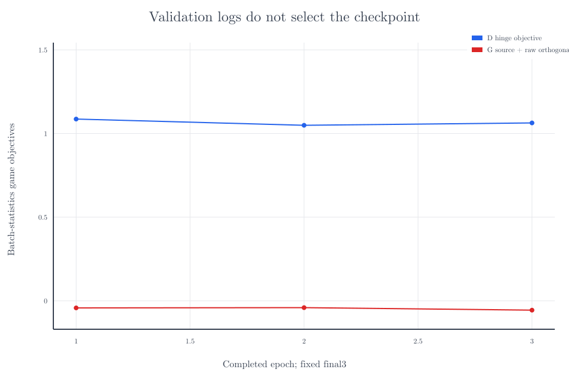
Held-out inference images and the source evaluation convention
| Fixed final diagnostic | Value |
|---|---|
| D hinge objective, batch-statistics fake | 1.0547924042 |
| G source term, batch-statistics fake | -0.0504588634 |
| G modified raw-kernel penalty | 1.4359538625e-7 |
| G total objective | -0.0504587181 |
| Maximum class change in generated pixels | 0.1876689494 |
| Maximum class change in real-image projection score | 0.4659057856 |
| Frozen-statistics single/batch inference maximum error | 0 |
The gallery keeps the first 40 fixed test codes and their supplied classes, without choosing attractive outputs. These are saved-statistics inference images, whereas the reported game losses above use batch-statistics fake images from the same 200-row test bank. A negative generator source term is a raw-score objective value, not a negative image error or a realism metric. No requested-class recognition accuracy, IS, FID, seed sweep or paper-scale result is claimed by this short run.
#include <dm/dm.hpp>
int main() {
std::filesystem::copy_file(
"build/big_gan/generated.png",
"build/big_gan_generated.png",
std::filesystem::copy_options::overwrite_existing);
std::print("First40 fixed-bank inference samples; no gallery selection.\n");
}First40 fixed-bank inference samples; no gallery selection.
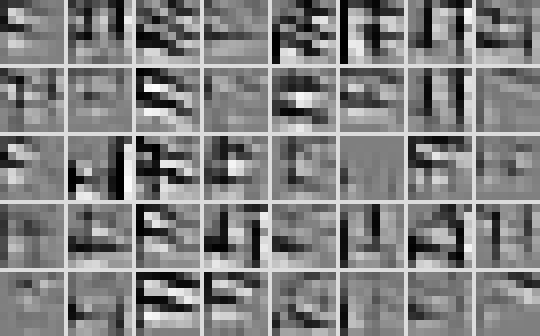
Compare the two saved generator paths on the same codes
The top row uses checkpoint moving statistics. The bottom row uses batch moments computed from the complete 200-row held-out code bank, then displays its first eight rows. It does not recompute batch moments on only the displayed eight. Both paths use the same weights, labels and codes; neither writes state. Standalone inference agrees bit exactly with the combined forward's inference pixels, and the first sample has zero measured single/batch inference difference because saved moments stay fixed.
#include <dm/dm.hpp>
int main() {
namespace n = dm::nn;
std::map<std::string, n::Tensor> a;
for (const auto& [k, v] : n::load_npz("build/big_gan/outputs.npz"))
a.emplace(k, v);
auto images = n::concat(
{n::slice_axis(a.at("fake_inference"), 0, 0, 8),
n::slice_axis(a.at("fake_training"), 0, 0, 8)},
0);
n::save_image_grid(images, "build/big_gan_paths.png", 8, 0, 1, 4, 220 / 255., 8);
std::print(
"Top: saved BN. Bottom: batch BN from all200 test codes. Both paths leave checkpoint state "
"unchanged.\n");
}Top: saved BN. Bottom: batch BN from all200 test codes. Both paths leave checkpoint state unchanged.
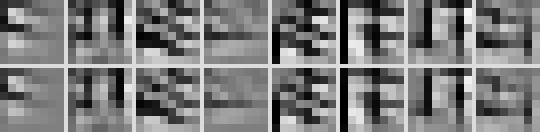
Hold eight latent codes fixed and change the requested class
Rows 0 through 9 supply the ten class labels; every row reuses the same first eight fixed latent codes. The maximum pixel effect across classes is about.187669, confirming an active conditional path. Pixel dependence does not establish that each row depicts its requested digit. The raw G embedding is shared by its two conditional normalizers; D has its own separate spectral projection table.
#include <dm/dm.hpp>
int main() {
std::filesystem::copy_file(
"build/big_gan/class_grid.png",
"build/big_gan_classes.png",
std::filesystem::copy_options::overwrite_existing);
std::print("Ten requested classes, eight repeated codes per row; no class-accuracy claim.\n");
}Ten requested classes, eight repeated codes per row; no class-accuracy claim.
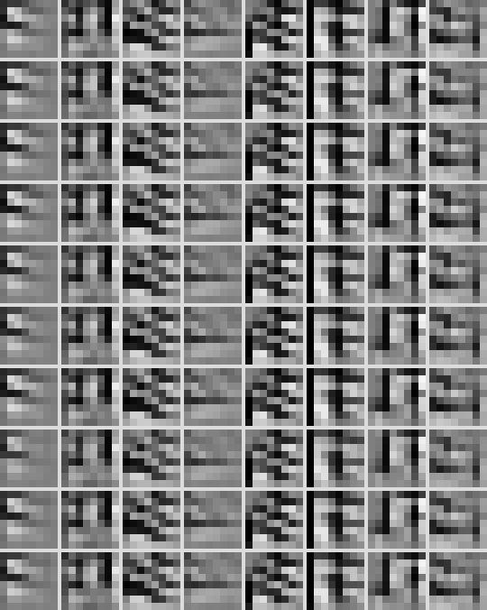
Hold real pixels fixed and change only the projection class
The replay loads D and its spectral vectors from the checkpoint, without G or BN. For every held-out real image, source features and the unconditional source term are bit identical under c and(c+1)%10. Only the projection term changes. Both recomputed scores match the original control archives exactly. The scatter keeps all 200 pairs; its diagonal marks no score change. The observed maximum score effect.465906 proves class dependence, without turning the raw score into a class posterior or accuracy.
#include <dm/dm.hpp>
int main() {
namespace n = dm::nn;
namespace m = n::models;
n::NoGradGuard guard;
n::ParameterStore d(2), sn(0);
for (const auto& [key, value] : n::load_npz("build/big_gan/final.npz")) {
if (key.rfind("1/", 0) == 0)
d.set(key.substr(2), value);
if (key.rfind("3/", 0) == 0)
sn.set(key.substr(2), value);
}
auto pools = m::LoadSaliency(std::filesystem::path(dm::datasets::data_home()) / "saliency");
std::map<std::string, n::Tensor> data, original, controls;
for (const auto& [k, v] : n::load_npz("build/big_gan/data.npz"))
data.emplace(k, v);
for (const auto& [k, v] : n::load_npz("build/big_gan/outputs.npz"))
original.emplace(k, v);
for (const auto& [k, v] : n::load_npz("build/big_gan/class_controls.npz"))
controls.emplace(k, v);
auto classes = pools[2].labels.to_vector<std::int32_t>();
for (auto& c : classes)
c = (c + 1) % 10;
auto a = m::BigGanDiscriminate(d, sn, data.at("test_images"), pools[2].labels),
changed =
m::BigGanDiscriminate(d, sn, data.at("test_images"), n::from_vector(classes, {200}));
if (!n::equal_bits(a.features, changed.features) || !n::equal_bits(a.source, changed.source) ||
!n::equal_bits(a.score, original.at("real_score")) ||
!n::equal_bits(changed.score, controls.at("changed_real_scores")))
throw std::runtime_error("projection replay");
n::save_npz(
"build/big_gan/projection_terms.npz",
{{"features", a.features},
{"source", a.source},
{"projection", a.projection},
{"score", a.score},
{"changed_projection", changed.projection},
{"changed_score", changed.score}});
auto x = a.score.to_vector<double>(), y = changed.score.to_vector<double>();
double low =
std::min(*std::min_element(x.begin(), x.end()), *std::min_element(y.begin(), y.end())),
high =
std::max(*std::max_element(x.begin(), x.end()), *std::max_element(y.begin(), y.end())),
span = high - low;
std::print(
"All200 projection replays exact; maximum raw-score change={}.\n",
n::max(n::abs(a.score - changed.score)).item());
auto p = dm::graphics::RPlot::create();
p.y_limits(low - .1 * span, high + .4 * span)
.lines({low, high}, {low, high}, "No score change", {120, 120, 120}, 1.)
.points(x, y, "Same image, next class", {37, 99, 235}, 3.)
.x_label("Original requested-class raw score")
.y_label("Same pixels, next-class raw score")
.title("Only the class projection changes")
.save_svg("build/big_gan_projection.svg");
}All200 projection replays exact; maximum raw-score change=0.4659057855606079.
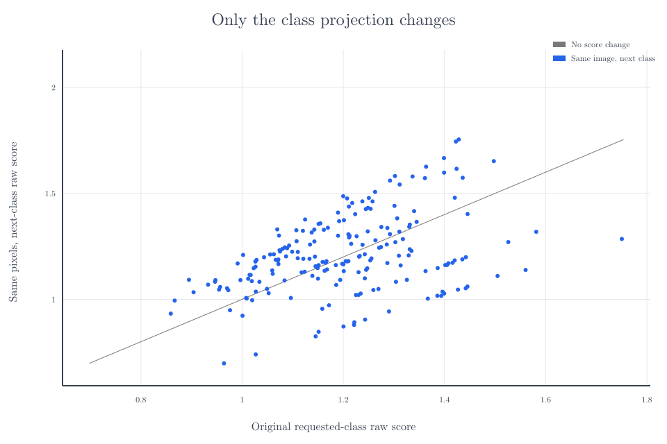
Zero each of the three hierarchical latent chunks
The saved controls replace one four-coordinate chunk with zero, retaining every other coordinate and class. All three replacements affect G. The gallery uses the first eight fixed test rows: original inference, zero stem chunk z 0, zero first-conditional chunk z 1, then zero second-conditional chunk z 2. Effects establish that each supplied chunk matters; they do not identify disentangled factors or independently meaningful semantic controls.
#include <dm/dm.hpp>
int main() {
namespace n = dm::nn;
std::map<std::string, n::Tensor> a, h;
for (const auto& [k, v] : n::load_npz("build/big_gan/outputs.npz"))
a.emplace(k, v);
for (const auto& [k, v] : n::load_npz("build/big_gan/hierarchical_controls.npz"))
h.emplace(k, v);
std::vector<n::Tensor> rows{n::slice_axis(a.at("fake_inference"), 0, 0, 8)};
for (int c = 0; c < 3; ++c) {
auto image = h.at("zero_chunk" + std::to_string(c) + "_fake");
rows.push_back(n::slice_axis(image, 0, 0, 8));
std::print(
"Zero chunk{}: full-bank maximum pixel effect={}\n",
c,
n::max(n::abs(image - a.at("fake_inference"))).item());
}
n::save_image_grid(n::concat(rows, 0), "build/big_gan_hierarchy.png", 8, 0, 1, 4, 220 / 255., 8);
}Zero chunk0: full-bank maximum pixel effect=0.6745476126670837 Zero chunk1: full-bank maximum pixel effect=0.8051217794418335 Zero chunk2: full-bank maximum pixel effect=0.5451591610908508
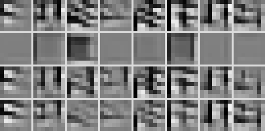
Compare rejection thresholds with frozen inference state
Columns use limits infinity,2,1,.5. Every bank starts from MT seed 6907 and accepts its own stream after thresholding, so columns are not clipped or rescaled versions of a shared accepted vector. Each displayed row holds its requested class fixed across columns, using source labels i%10. The full banks have 200 rows per threshold, while this original gallery keeps the first eight rows. All normalization and learned state remain frozen. This comparison demonstrates the supplied distribution control; it is not an IS/FID evaluation of a quality/diversity tradeoff in this tiny model.
#include <dm/dm.hpp>
int main() {
namespace n = dm::nn;
std::filesystem::copy_file(
"build/big_gan/truncation.png",
"build/big_gan_truncation.png",
std::filesystem::copy_options::overwrite_existing);
std::print("| limit | accepted coordinates | tested proposals |\n|---|---:|---:|\n");
for (int k = 0; k < 4; ++k) {
std::map<std::string, n::Tensor> p;
for (const auto& [key, value] :
n::load_npz("build/big_gan/truncated_prior" + std::to_string(k) + ".npz"))
p.emplace(key, value);
std::print(
"| {} | {} | {} |\n",
k == 0 ? "infinity"
: k == 1 ? "2"
: k == 2 ? "1"
: ".5",
p.at("z").numel(),
p.at("proposals").numel());
}
}| limit | accepted coordinates | tested proposals |
|---|---|---|
| infinity | 2400 | 2400 |
| 2 | 2400 | 2529 |
| 1 | 2400 | 3557 |
| .5 | 2400 | 6383 |
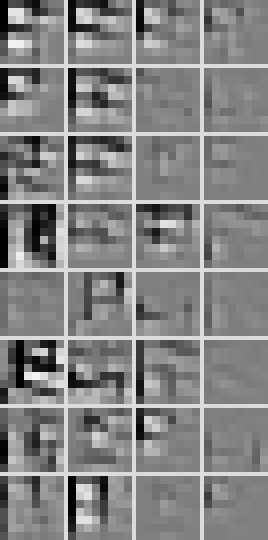
Inspect the two contributions to the first G gradient
The original experiment checks G partials as adversarial plus modified orthogonal. The report also saves the first full captured gradient before any D/cache update for this batch. The plot computes L 2 norms over all 789 G parameters and shows log 10(norm) so the small orthogonal contribution remains visible. Non-kernel orthogonal partials are defined zeros. The full sum agrees within the original 3e-5 Float32 tolerance; matching component norms alone would not prove the vector equality, so every element is checked too. These are initial-batch derivatives, not an optimizer or final-quality ablation. The coefficient and schedule remain fixed throughout the run.
#include <dm/dm.hpp>
int main() {
namespace n = dm::nn;
std::map<std::string, n::Tensor> a, o, f;
for (const auto& [k, v] : n::load_npz("build/big_gan/first_adversarial_gradients.npz"))
a.emplace(k, v);
for (const auto& [k, v] : n::load_npz("build/big_gan/first_orthogonal_gradients.npz"))
o.emplace(k, v);
for (const auto& [k, v] : n::load_npz("build/big_gan/first_full_gradients.npz"))
f.emplace(k, v);
double sa = 0, so = 0, sf = 0, error = 0;
std::int64_t count = 0;
for (const auto& [k, v] : a) {
auto av = v.to_vector<double>(), ov = o.at(k).to_vector<double>(),
fv = f.at(k).to_vector<double>();
for (std::size_t i = 0; i < av.size(); ++i) {
sa += av[i] * av[i];
so += ov[i] * ov[i];
sf += fv[i] * fv[i];
error = std::max(error, std::abs(av[i] + ov[i] - fv[i]));
++count;
}
}
if (count != 789 || error > 3e-5)
throw std::runtime_error("G component vector sum");
std::vector<double> norms{std::sqrt(sa), std::sqrt(so), std::sqrt(sf)}, logs;
for (double value : norms)
logs.push_back(std::log10(value));
std::print(
"All{} parameter partials checked; max sum residual={}; L2 norms: adversarial={}, "
"orthogonal={}, full={}.\n",
count,
error,
norms[0],
norms[1],
norms[2]);
double low = *std::min_element(logs.begin(), logs.end()),
high = *std::max_element(logs.begin(), logs.end());
auto p = dm::graphics::RPlot::create();
p.y_limits(low - .5, high + 2.)
.points({1.}, {logs[0]}, "Adversarial", {37, 99, 235}, 5.)
.points({2.}, {logs[1]}, "Modified orthogonal", {22, 163, 74}, 5.)
.points({3.}, {logs[2]}, "Full G gradient", {220, 38, 38}, 5.)
.x_label("Component: adversarial1; orthogonal2; full3")
.y_label("log10 L2 parameter-gradient norm")
.title("Check the full vector sum as well as its scale")
.save_svg("build/big_gan_gradients.svg");
}All789 parameter partials checked; max sum residual=6.9548962144949655e-09; L2 norms: adversarial=10.100318581464231, orthogonal=1.7345970843958127e-06, full=10.100318578130377.
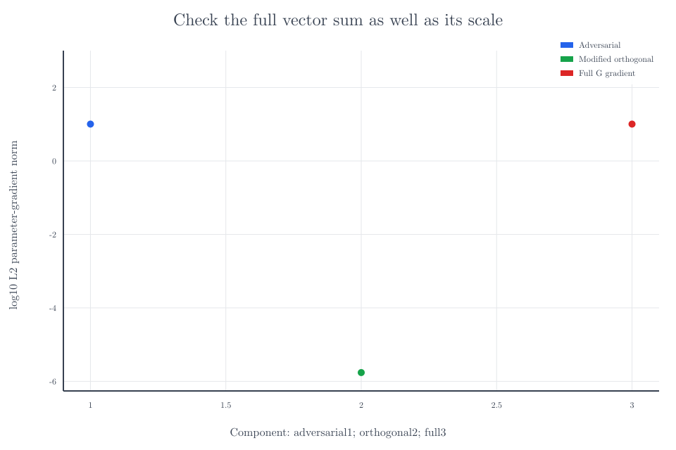
Verification and limits
The full promoted-source run and the editable native experiment preserve all 23 original archives/319761 values exactly in dtype, shape and value bytes, both TSVs, all three source PNGs and non-timing metrics. Ten phase probes additionally match 15268 native values across initialization, spectral advances, selected gradients, Adam and captured BN writes. Direct combined initialization matches all 1372 checkpoint values; six native prior banks match 34069 accepted/audit values, and native resize matches 89600 pixel values exactly.
NumPy independently imports no datamunge and performs no fitting. Its Double calculations check 84708 forward values,4740 native derivative/capture values,74 final scalar finite differences,89600 resized pixels,19669 exact rejection proposals and 14400 accepted prior coordinates. It checks class/projection, hierarchy and truncation controls, all 3000 fitting row visits, phase ownership and bit-exact first moving-statistic updates. Float32 native normalization derivatives are compared with measured numerical tolerances; they are not claimed bit identical to independent Double arithmetic. The native-to-native comparisons above are strict. The extra full-gradient and projection-decomposition archives receive separate independent checks.
Native, Python and R component checks cover owning nested records, malformed inputs, source-rounded captures, stopped state paths, higher derivatives, all hierarchical chunks, projection dependence and explicit writes. They do not complete independent host-language full experiment loops. This is one short fixed run, without a seed sweep, uncertainty study, requested-class recognition metric or paper-scale benchmark. Conditioning responses and rejection controls demonstrate mechanisms; no convergence, semantic disentanglement, certified Lipschitz bound or realistic-generation result follows from those checks alone.